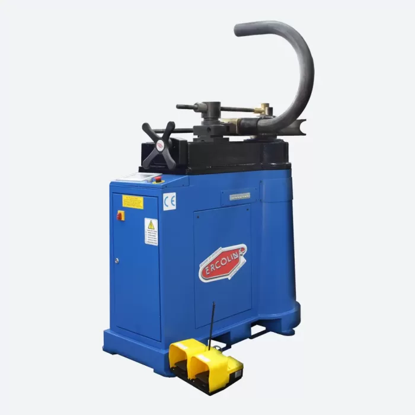
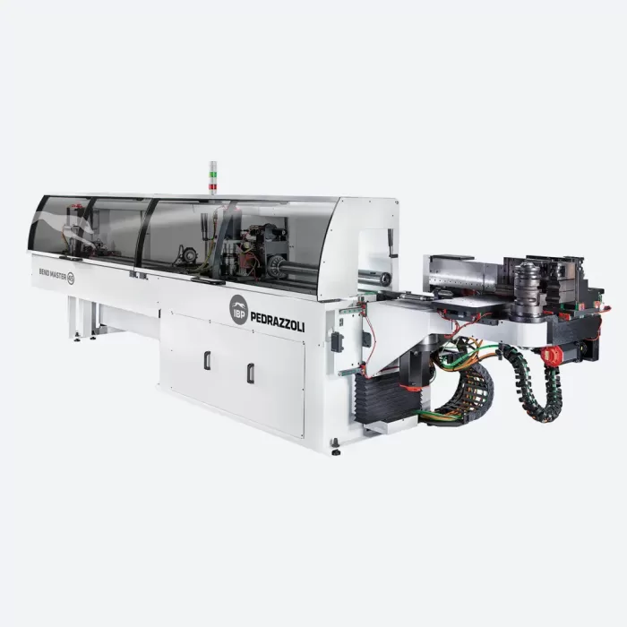
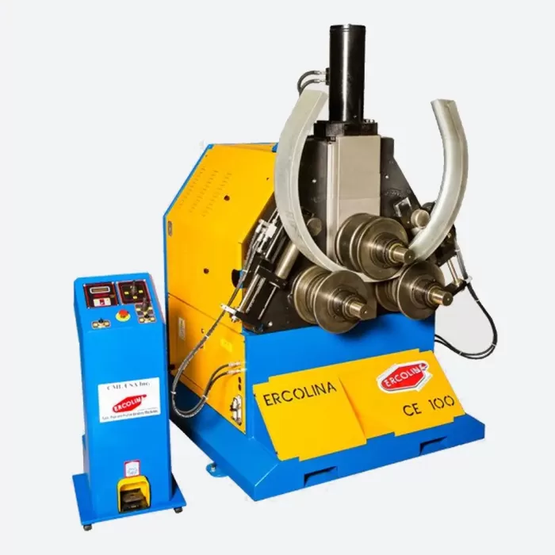
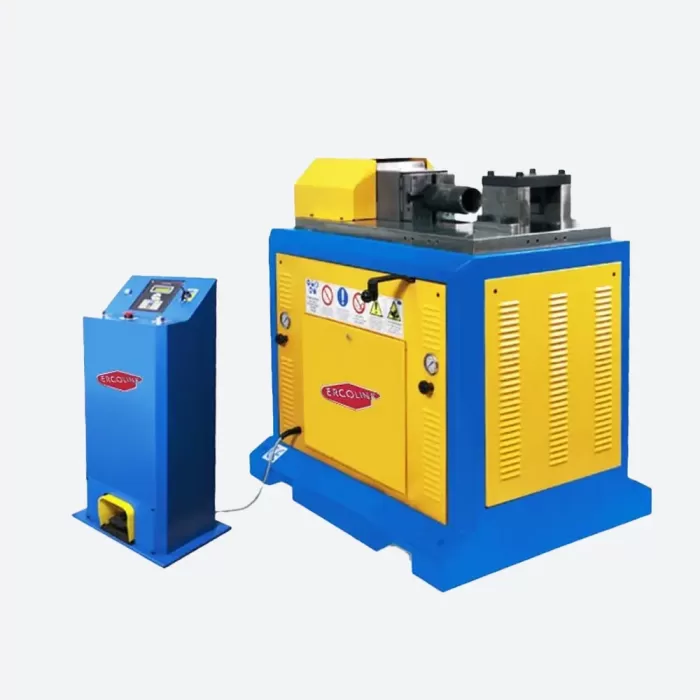

Dal 1973, Ercolina - Pedrazzoli progetta e produce in Italia macchine per la curvatura di tubi e profilati, con brevetti propri e una rete di distribuzione in oltre 50 paesi.
In qualità di partner ufficiale, BECA gestisce direttamente richieste, dimostrazioni operative e assistenza su tutta la gamma, con disponibilità a magazzino e fornitura rapida di ricambi originali.
Curvatubi, centinatrici e presse per la curvatura e la deformazione di tubi, barre e profilati metallici.

Per la curvatura di tubi a parete spessa con raggi ampi. Lavorazione rapida senza supporto interno, ideale per applicazioni strutturali e industriali.
Richiedi informazioni
Per tubi a parete sottile con raggi stretti. Il supporto interno previene l'ovalizzazione e garantisce la precisione del profilo.
Richiedi informazioni
Curvatubi completamente elettrica per tubi a parete sottile con raggi stretti. Azionamenti elettrici per ripetibilità, precisione e minori consumi rispetto ai sistemi idraulici.
Richiedi informazioni
Per la curvatura di profilati metallici: travi IPE/UPN, angolari, piatti e tubi quadri. Indicata per archi, portali e strutture curve in acciaio.
Richiedi informazioni
Per raddrizzatura, piegatura e deformazione di barre, tubi e profilati. Struttura orizzontale per lavorazioni su pezzi lunghi con controllo preciso della forza.
Richiedi informazioniLa macchina giusta dipende soprattutto da cosa devi curvare: lo spessore della parete del tubo, il raggio di curvatura che ti serve e il tipo di materiale (tubo tondo, tubo quadro, trave o profilato).
| Macchina | Indicata per |
|---|---|
| Curvatubi senz'anima | Tubi a parete spessa con raggi ampi, applicazioni strutturali e industriali |
| Curvatubi con anima | Tubi a parete sottile con raggi stretti, quando serve evitare l'ovalizzazione |
| Curvatubi con anima Full Electric | Tubi a parete sottile con raggi stretti, con azionamenti elettrici per ripetibilità e minori consumi |
| Centinatrice | Profilati: travi IPE/UPN, angolari, piatti e tubi quadri per archi, portali e strutture curve |
| Pressa orizzontale | Raddrizzatura, piegatura e deformazione di barre, tubi e profilati, anche su pezzi lunghi |
Non sei sicuro di quale sia la soluzione adatta alla tua produzione? Ogni richiesta parte dalla valutazione delle necessità produttive: contattaci e ti aiutiamo a individuare la macchina giusta.
Ciro Benedetto segue ogni richiesta direttamente, in sinergia con il fornitore, con presenza diretta sul campo: dalla valutazione delle necessità produttive, alla configurazione dell'offerta commerciale, fino alla consegna e alla messa in funzione dell'impianto.
Sì. BECA è partner ufficiale Ercolina - Pedrazzoli e gestisce direttamente richieste, dimostrazioni operative e assistenza su tutta la gamma.
Il curvatubi senz'anima è indicato per tubi a parete spessa con raggi ampi, senza supporto interno. Il curvatubi con anima è indicato per tubi a parete sottile con raggi stretti: il supporto interno previene l'ovalizzazione e garantisce la precisione del profilo.
Per i profilati metallici (travi IPE/UPN, angolari, piatti e tubi quadri) si usa la centinatrice, indicata per archi, portali e strutture curve in acciaio.
Sì, BECA organizza dimostrazioni operative sulla gamma Ercolina - Pedrazzoli. Puoi richiederla tramite telefono, WhatsApp o email.
Sì, BECA offre fornitura rapida di ricambi originali e supporto post-vendita.
Per una consulenza tecnica personalizzata e senza impegno, contattami direttamente. Lun – Ven: 8:30 – 18:30.